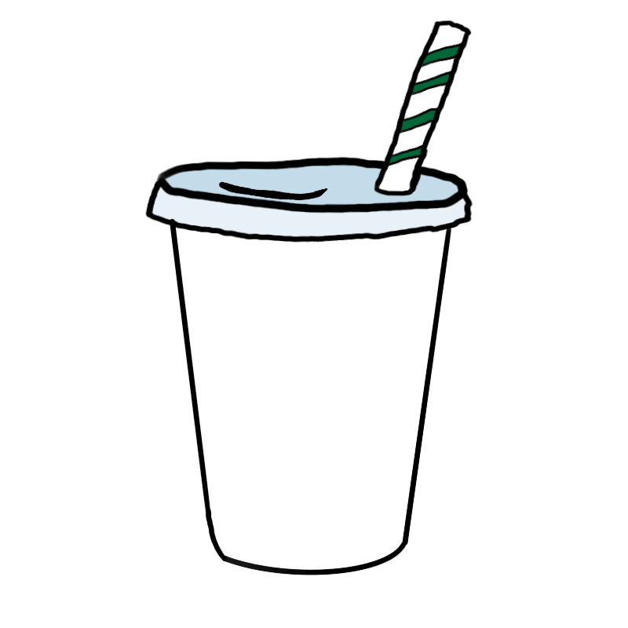
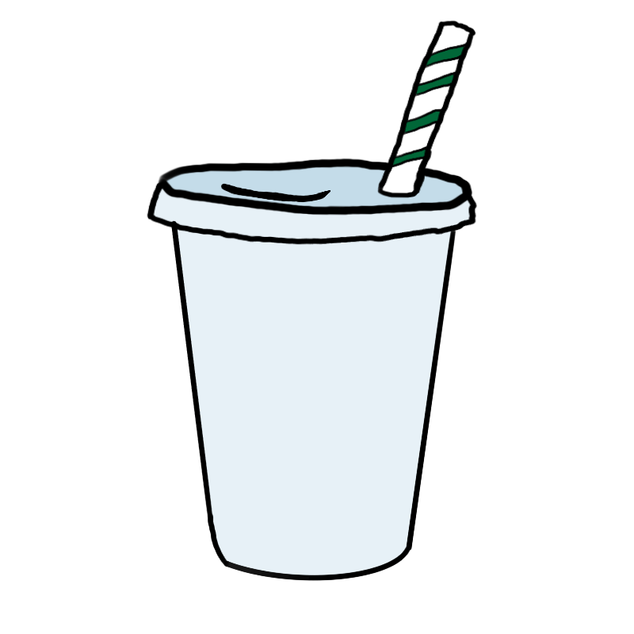

Hello! I'm a coffee bean, originating from Taiwan! On our first couple stops you'll learn more about
your lovely narrator, a coffee bean from the far away! We'll then learn about my worldwide coffee bean
family and what processes they go through! Below, you can see my home country and other coffee-producing countries!
I'm harvested in Taiwan. While my homeland doesn't harvest as many coffee bean friends as other
countries, our journey to your cup of coffee in the states is the longest. I was born on the Dragon
Coffee Farm in the northern mountains, and raised by the largest coffee company in Taiwan, Blossom
Valley. Explore the visualization below to check out the largest coffee companies in Taiwan!
Top 5 Taiwanese Coffee Companies
Here is some spoilers for my journey accross the world! This shows the start, middle, and end of my story. From where I started in Taiwan, then got roasted and shipped from New York, and then got turned into iced coffee in Arizona.
Once I arrive in my processing country, their methods vary depending on the country.
Let's see how different countries prepare me — it might affect my aroma or flavor! Click on any of the listed countries to see the ways that they prepare me. To learn more about the different ways I'm
processed, hover over the methods shown!
North America
South America
Asia
Africa
I’m getting closer to your cup every step of the way! If you look to the lower right corner of the
screen, you can see the progress of the coffee cup which represents my life's progress as a bean!👉↘️


From farm to roast, my journey takes time, care, and effort. Drag me across the timeline to see how Taiwanese beans like me grow up,
and hover over the image to learn more about each stage of the life of a Taiwanese Coffee bean!
Coffee Plant
Now that I’m roasted and ready, let’s explore my flavor profile!
I’m known for my aroma, acidity, sweetness and more. Select my country from the dropdown to see my
values!🇹🇼
Select a country to
view the radar chart:
Curious about how much I’m worth? This line chart tracks how coffee prices have changed over time, from
harvest to sale 📈.
Hover over the line to see how much I cost throughout the decades or look closer by choosing a specific
year!
Average Price of Coffee Throughout the Decades
What do people think of me?🤔 This survey shows how drinkers enjoy other beans like me, the coffee shops they get them from, and if they like to drink coffee strong, with creamer, or sweet.
This next visualization shows which combinations of coffee habits/preferences exist among students, how
many people fall into each combination, and how big each individual coffee-related group is overall.
Wait... not everyone drinks coffee? 😮
Why would anyone not want to drink me?!
Let's see what these mysterious non-coffee drinkers are sipping on instead...
Looks all those non coffee drinkers just really like water.🙄 Anyways, I have finally reached my final form! 🌟
I'm a little disappointed it didn't let me discuss all of my coffee paraphernalia, which includes a pour
over kit, aeropress, espresso machine, chemex, french press, ibrik, and a moka express (and I sometimes
use my wife's keurig when I'm feeling lazy).